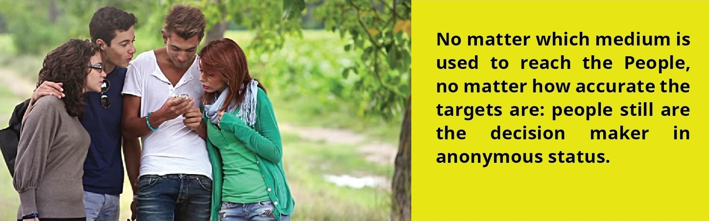
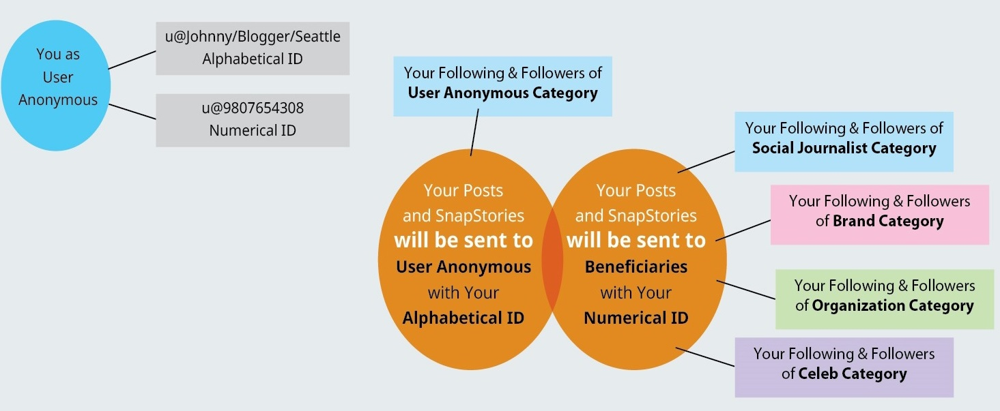

User Anonymous Category of Newslets is real-life common people who do not fall in any other cat-egories of the Platform, such as Social Journalist, Organization, Brand, or Celeb.
People are the source of power, source of energies, source of perpetuity, source of social, political, economic, cultural benefits. Without People, Socal Journalists will have no readers, no Organization will have followers, no Brand or Business will have customers, and no Celeb will have supporters.
People are the natural benefit providers to all of the above Beneficiaries. In return of providing benefits, people must ensure that services are provided as prescribed. In our case, Users must expect Quality of Contents from the Beneficiary Categories.
Beneficiaries cease to exist without required quantities of people providing benefits on a regular basis. That's why each Beneficiary has to develop a baseline of Following and Followers, minimum to survive, maximum for potential of growth. This process of development can only happen through "effective communication". And communication is the means to build and maintain relations with necessary constituents. Communication is beyond "connecting and networking". It is the tool in the process of survival.
To keep People as a unified Voice in any situation, it is necessary to keep them individually Anony-mous. That's why in voting process, each voter is essentially being kept anonymous. Newslets is de-signed on this premise, that, people's voice is powerful when people are individually and collectively anonymous. It is naturally realistic, authentic, and representative. In virtual world of social amalgamation, this is the most practical format that coincide with realities of offline world.
Newslets will issue two (2) IDs for each User anonymous. One is Alphabetical ID and the 2nd one is Numerical ID. A regular Alphabetical ID will contain characters from Name, Location, Interest with a category Prefix ( u@ ). A parallel Numerical ID will be auto created which will contain Prefix followed by figures (u@4680213720). Purpose of Numerical ID is to is to keep a User Anonymous to his/her Beneficiaries.
User's Posts will go to all Following and all Followers (of own class) of Users with Alphabetical ID. Users will be exposed and be known to each other. All Users of common interests will build consen-sus on common Beneficiaries through Posts which are mostly reviews (on brands and businesses), opinions, comments (on News of Social Journalists) , statements,remarks, assessments, critiques (on Organizations) and compliments, praises, supportive statements (on Celebs). But, the same post(s) will go to all Following of Socila Journalists, Organizations, Brands, and Celebs with Numerical ID. As a result, Beneficiaries will come to know individual mind and collective mind from all Users who are Following.
Beneficiaries can only Follow an User Anonymous via Numerical ID only available with Posts. It means User Anonymous's contents are the only force that will control Beneficiaries behavior.
Beneficiaries will be able to make "Reply" to User Anonymous concerns via Comment & Reply thus can make an immediate dialogue. But to make an overall impact on the constituents, a policy change in service delivery will be a must.